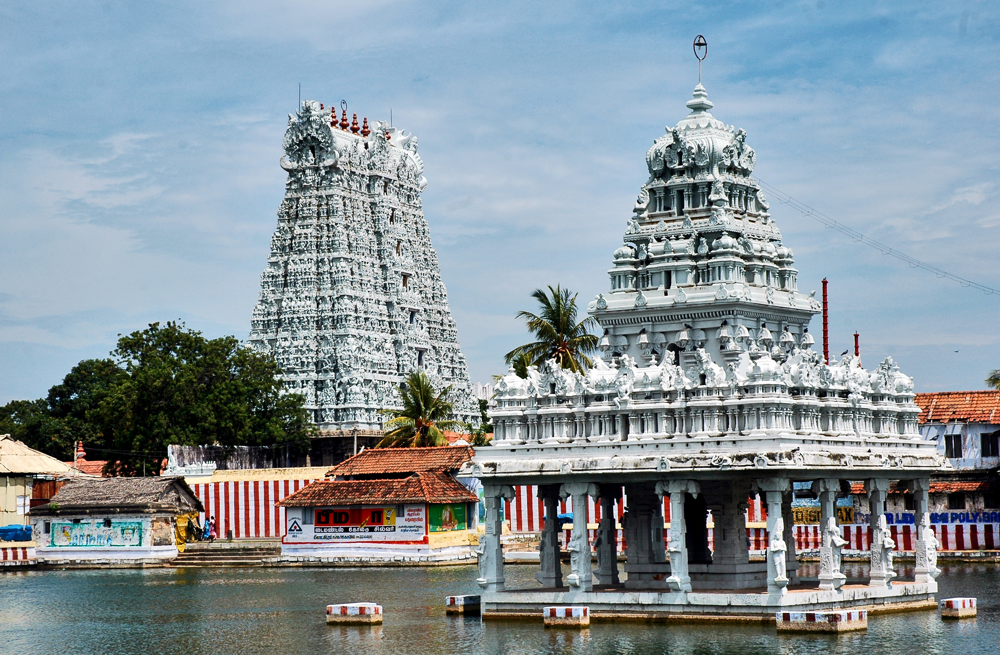
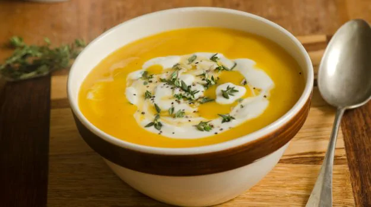
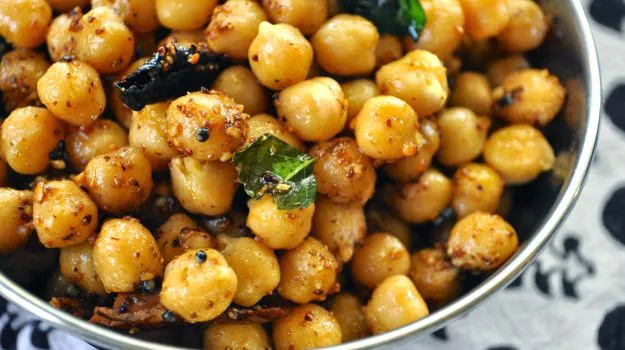

CHENNAI
Chennai , also known as Madras (the official name until 1996), is the capital city of the Indian state of Tamil Nadu. The state's largest city in area and population as well, Chennai is located on the Coromandel Coast of the Bay of Bengal, and is the most prominent cultural, economic and educational.

Best Places to visit:-
1. Marina Beach:-

India's largest beach is right around the corner when one is in Chennai. With an extent from Fort St. George to Besant Nagar, the beach is lined with up palm trees. A view when sky and water meet at both the ends is just visible right in front of the eyes when one stands at the shores.
2. Fort St. George:-
History of India with the British is a fact that can't be changed. And the live example standing in front is Fort St. George. During British rule, it was made as a centre point for official purposes but now encompasses St. George museum with paintings, coins, silverware, arms, porcelain, and documents.

3. Thousand Lights Mosque:-

Since the architecture has a special corner in the heart of Chennai, Thousand Lights Mosque stands tall in this list. The place has got its name because of a special feature i.e. a total of 1000 oil lamps light up the hall of the mosque. Imagine the beauty!!! Also, it is one of the biggest mosques in the country.
4. Elliot’s Beach:-
Though a less crowded beach than Marina, Eliot has its own catch. Now named at Besant Nagar Beach, it attracts people because of the serene beauty and clean brown sands.

5. Ashtalaxmi Temple:-

Lying on the gorgeous expanse of the Besant Beach, this is the only temple dedicated to Goddess Mahalakshmi on Tamil Nadu’s east coast. You can see the idols of Dashavatara, Ganesha, and Guruvayoorappan. The magnificence of the architecture lies in its ‘OM’ shaped design, making it one of the most enchanting places to visit in Chennai.
Must try Dishes:-
1. Mulligatawny Soup:-

Madras is where the British empire in India took wings and the British influence on the city foodscape is still evident in the city's 19th century gentleman's clubs.
2. Sundal:-
The Marina beach - one of the world's longest urban beaches, is almost an integral part of the city's identity. It's also the best place to sample sundal - usually boiled white channa (it's common to find black channa and green peas.
 3. Nethili Fry:-

Chennai'sfishing community can claim to be one of the city's earliest inhabitants. The city is a treasure trove for seafood with fresh catch of the day easily available for homes and restaurants alike (which is why it puzzles me why many restaurants choose to use basa).
Must visit Restaurants:-
1. Pumpkin Tales:-

Authentic Goan curries made with home-made masala and traditional recepies.
and Portuguese inspired dishes espically famous for its 11 layered Pancake.
A great restaurent to visit . Have a visit there . No 1 restraurent of agra with best facilities , and a lot variety of food.
2. Amelies Cafe and Creamery:-
This restaurant has a no-fuss rustic charm offering a variety of seafood and many moreand Portuguese inspired dishes espically famous for its 11 layered Pancake.
A great restaurent to visit . Have a visit there . No 1 restraurent of agra with best facilities , and a lot variety of food.

3.Absolute Barbecue:-

A hundred and fifty year old ancestral home converted into a restaurant, serves a variety of Goan
and Portuguese inspired dishes espically famous for its 11 layered Pancake.
A great restaurent to visit . Have a visit there . No 1 restraurent of agra with best facilities , and a lot variety of food.